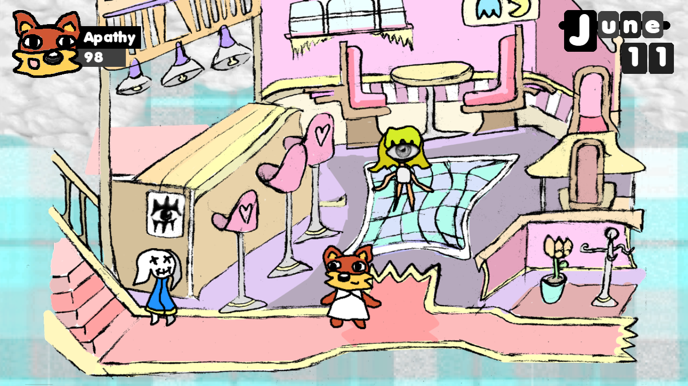
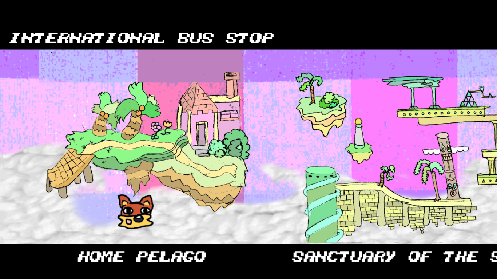
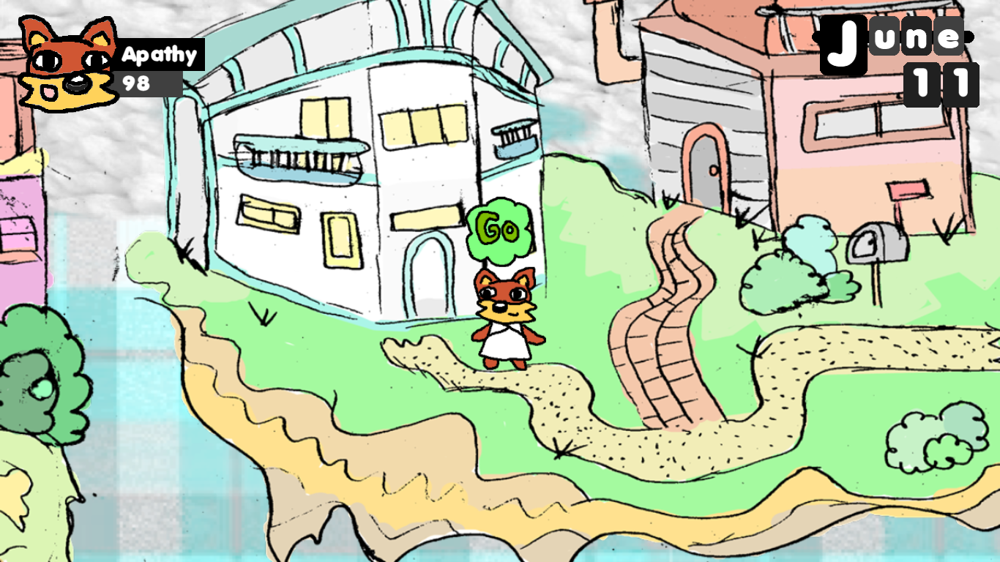

the Velvet Bar
October 2, 2018

It's the social venue for Apathy and his pals, the Velvet Bar. Meet with
friends to discover their true nature (and upgrade abilities)! There's even a
bartender who has yet to be implemented into the code. She had to be somewhere
tonight.
New art appeared
October 1, 2018

Art is a common byproduct of working on videogames. I've decided to (eventually) add
this drawing into the game. Until then, it's uploaded here ¯\_(ツ)_/¯
World Traversal System
September 30, 2018

This is a long awaited update for the residents of Ikari; finally, public
transportation! The International Bus Stop is a new interface which allows the player
to travel between worlds. So far, it only reaches two places, but the vessel will
eventually grant access to dungeons.
the Ikari Pelago...
September 29, 2018

Welcome to the Ikari Pelago, homeworld of our protagonists. Ikari is a group of
floating islands that broke off from Earth about a century ago. Now, in the
year 21XX, strange creatures have inhabited these lands. With the questionable
goddess Divinity at their lead, will Ikari be thrown into political
peril?